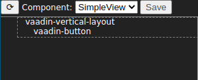
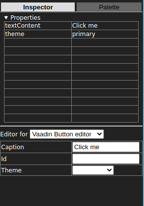
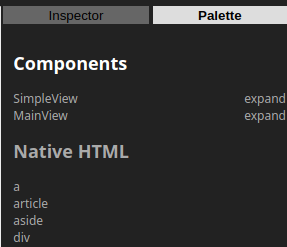
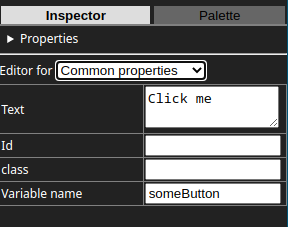

GUI Builder is an application for editing user interfaces visually. It provides direct editing of components by dragging and dropping them on a canvas and an outline representation of the element tree. Elements can be selected and the properties of the selected elements can be modified as strings in a table. For many elements and properties special custom editors are provided with an editing experience suited for each component or property set in question.
While the GUI Builder architecture has provisions for swapping out the target framework and component set, currently only Vaadin is supported.
The UI consists of the following parts:
The outline provides a tree form view to the component. Sometimes it can be easier and more precise to drag and drop elements in the outline vs. using the canvas. Elements can be selected by clicking on them. When an element is selected, a border is drawn around it and its children to indicate that they have been selected. The inspector tab is also opened to display the properties of the selected element.
The inpector is for modifying the properties of the selected component (these are attributes in the case of Vaadin). There are two ways to edit them: you can use a table of key value pairs, or custom editors that target specific elements and property sets. For example, Vaadin Button has its own editor and flexbox properties have their own editor that can be used with any element. An empty key and value in the table is considered to be non-existent, so to delete an attribute, clear out the row.
The palette is list of elements that can be dragged and dropped to the outline or to the canvas. Components found in the project via scanning are also present in the palette. There are two ways to add these to the component: by dragging the name of the element to insert it as an element, or by dragging the "expand" next to the element tag to expand the contents of the component into the current one.
The supported keyboard shortcuts include the usual copy, cut, paste, delete and undo/redo:
Lit templates are Web Components written in a subset of Lit element features. Namely expressions and nested templates are not supported. Many templates from start.vaadin.com can be edited, but some can't simply because the necessary data is only available during runtime.
Templates can be written in a subset of Java. The subset is equal to expressive power to Lit templates, which means it can be used to build a tree of components and set attributes on those components. Due to the restrictive nature of the subset, it is very unlikely you would want to edit existing components using it, but new ones can be created with greater ease.
Instead of using the Component API, Java support uses the Element API which allows creating arbitrary components instead of relying on what is exposed in the Component API. This removes many inconsistencies that exist between the Component API and the API that is available to those who use vaadin components directly on the client side.
To use the Java support, special markers need to be inserted somewhere into the Java component file that is to be edited with the GUI Builder:
// GUI CONSTRUCTION BEGIN
// GUI CONSTRUCTION END
Also the variable root should be available. That variable is
used as the root of the component tree, and new elements are placed into
it at the topmost level. Here is an example of the construction of simple
component in class SimpleView:
public SimpleView() {
Element root = this.getElement();
Element someButton;
// GUI CONSTRUCTION BEGIN
Element verticalLayout = new Element("vaadin-vertical-layout");
root.appendChild(verticalLayout);
Element button = new Element("vaadin-button");
verticalLayout.appendChild(button);
button.setText("Click me");
button.setAttribute("theme","primary");
someButton = button;
// GUI CONSTRUCTION END
}
To use an element outside the generated code, use the "Common properties" editor and the "Variable name" field to give the element a variable name where it is set in the generated code. It is up to you to provide a variable by that name in the scope you choose.
